DirectX 11 Terrain Tutorials

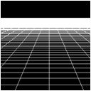 |
Tutorial 1: Grid and Camera Movement |
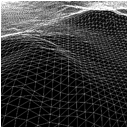 |
Tutorial 2: Height Maps |
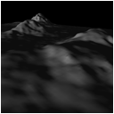 |
Tutorial 3: Terrain Lighting |
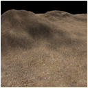 |
Tutorial 4: Terrain Texturing |
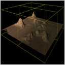 |
Tutorial 5: Quad Trees |
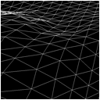 |
Tutorial 6: Height Based Movement |
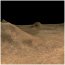 |
Tutorial 7: Color Mapped Terrain |
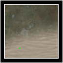 |
Tutorial 8: Terrain Mini-Maps |
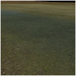 |
Tutorial 9: Terrain Blending |
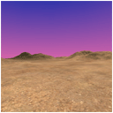 |
Tutorial 10: Sky Domes |
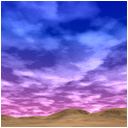 |
Tutorial 11: Bitmap Clouds |
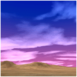 |
Tutorial 12: Perturbed Clouds |
Tutorial 13: Terrain Detail Mapping |
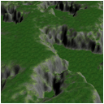 |
Tutorial 14: Slope Based Texturing |
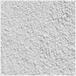 |
Tutorial 15: Terrain Bump Mapping |
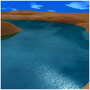 |
Tutorial 16: Small Body Water |
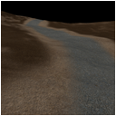 |
Tutorial 17: Terrain Texture Layers |
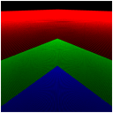 |
Tutorial 18: Large Terrain Rendering |
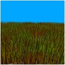 |
Tutorial 19: Foliage |